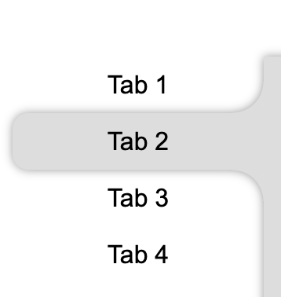
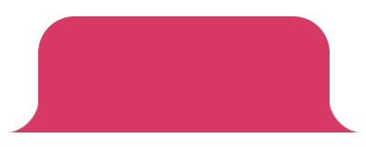
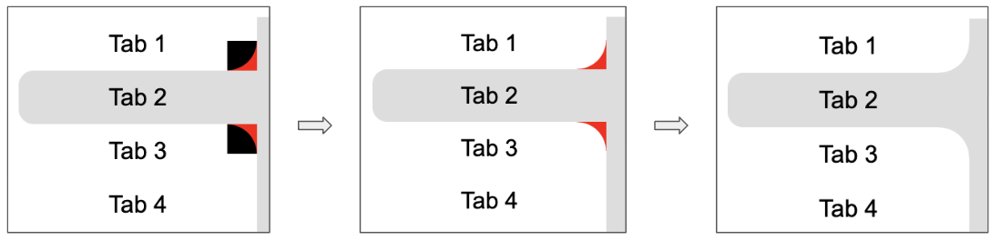
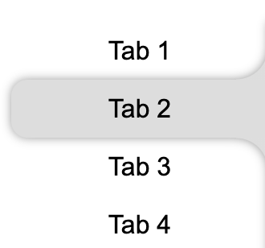
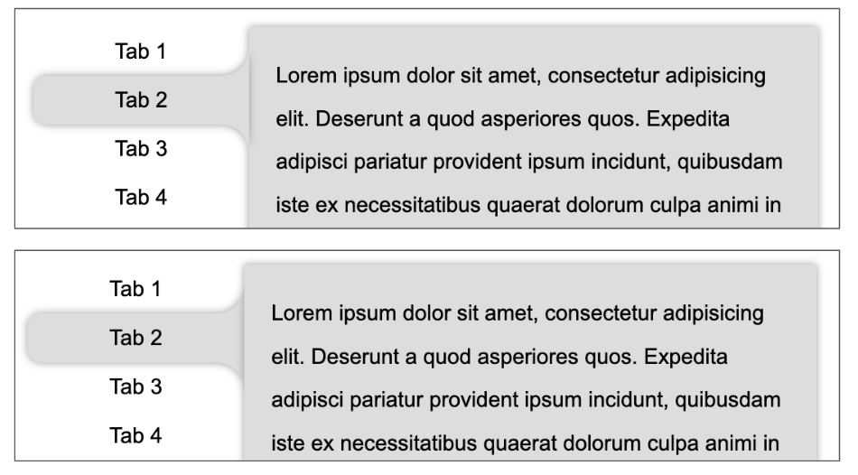

- 60 哪个 css 格式化工具是你的首选
- 59 CSS 选择器详解 12 个必知用法与最佳实践
- 58 动态视口单位之 dvh、svh、lvh
- 57 不规则造型按钮解决方案
- 56 不定宽文本溢出跑马灯效果完美解决方案
- 55 巧用 CSS 变量，实现动画函数复用
- 54 角向渐变的妙用
- 53 有趣的六芒星能力图动画
- 52 有意思的气泡 Loading 效果
- 51 CSS 原生支持的三角函数
- 50 有意思的网格下落加载效果
- 49 有意思的 Emoji 3D 表情切换效果
- 48 神奇的 3D 磨砂玻璃透视效果
- 47 抢先体验！超强大的 Anchor Positioning 锚点定位
- 46 CSS 也能实现碰撞检测
- 45 现代 CSS 解决方案 - 数学函数 Round
- 44 现代 CSS 解决方案 - 原生嵌套
- 43 神奇的背景，生化危机4日食 Loading 动画还原
- 42 当路径动画遇到滚动驱动
- 41 CSS 还原拉斯维加斯球数字动画
- 40 单标签下多色块随机文字随机颜色动画
- 39 CSS 也能实现 if 判断？实现动态高度下的不同样式展现
- 38 Flex 布局下居中溢出滚动截断问题
- 37 带圆角的虚线边框
- 36 现代 CSS 解决方案：文字颜色自动适配背景色
- 35 神奇的 3D 卡片反光闪烁动效
- 34 现代 CSS 解决方案：accent-color 强调色
- 33 巧用 has 和 drop-shadow 实现复杂布局效果
- 32 巧用 CSS + SVG 实现复杂线条光效动画
- 31 极具创意的鼠标交互动画
- 30 标准滚动条控制规范 scrollbar-color 和 scrollbar-width
- 29 类 ChatGpt 多行文本打字效果
- 28 神奇的卡片 Hover 效果与 Blur 的特性探究
- 27 渐变边框文字效果
- 26 巧妙使用多种方式实现单侧阴影
- 25 全尺寸的带圆角的渐变边框
- 24 开发中保证你用得到的 css 小技巧
- 23 您应该了解的 15 个有用的 CSS 属性
- 22 CSS 行元素的截断样式 box-decoration-break 属性
- 21 用 SASS 简化媒体查询
- 20 为什么你应该停止使用传统的 margin 和 padding 来设置 CSS 样式
- 19 sass 优化响应式布局代码
- 18 盘点 CSS 文本两端对齐的 N 种方式
- 17 如何修改滚动条的样式
- 16 CSS 模拟图片透明的棋盘背景
- 15 文本描边完美实现
- 14 你需要自定义 @property 而不是 CSS 变量的情况
- 13 从高度 0 过渡到自动高度
- 12 一些 css 语法解释
- 11 scss 日常用法
- 10 sass 指南
- 09 CSS 颜色设置透明度的新姿势
- 08 CSS 属性 appearance
- 07 CSS 动画性能优化
- 06 CSS 功能特性
- 05 CSS 中的 var() 函数
- 04 15 个你不知道的 CSS 属性
- 03 will-change
- 02 normalize.css 清除元素默认样式
- 01 纯 CSS 获取屏幕宽高
正常而言，我们的 HTML 结构大致是如下所示：
<div class="g-container">
<div class="g-nav">
<ul>
<li>Tab 1</li>
<li>Tab 2</li>
<li>Tab 3</li>
<li>Tab 4</li>
</ul>
</div>
<div class="g-main">
<ul class="g-content">
<li>...</li>
<li>...</li>
<li>...</li>
<li>...</li>
</ul>
</div>
</div>
对于 Hover 导航 Tab 时候的内容切换，暂且不谈。本文，我们核心想探讨的是两个点：
- 一是对于如下所示的不规则布局，应该如何实现：
并且，这里我们可能还需要给它加上阴影效果：
- 如何配合 Hover 动作，实现整个切换效果
带着这两个问题，我们一起来尝试慢慢把这个效果实现。
借助伪元素实现不规则按钮
首先，我们需要实现这个效果：

这个，其实在很多篇文章都有提及过：
想一想，这里其实就是竖向的 Chrome 分 Tab 的效果：
像是这样：

我们对这个按钮形状拆解一下，这里其实是 3 块的叠加：

只需要想清楚如何实现两侧的弧形三角即可。这里还是借助了渐变 -- 径向渐变，其实他是这样，如下图所示，我们只需要把黑色部分替换为透明即可，使用两个伪元素即可：

代码如下：
<div class="outside-circle"></div>
.outside-circle {
position: relative;
background: #e91e63;
border-radius: 10px 10px 0 0;
&::before {
content: "";
position: absolute;
width: 20px;
height: 20px;
left: -20px;
bottom: 0;
background: #000;
background: radial-gradient(circle at 0 0, transparent 20px, #e91e63 21px);
}
&::after {
content: "";
position: absolute;
width: 20px;
height: 20px;
right: -20px;
bottom: 0;
background: #000;
background: radial-gradient(
circle at 100% 0,
transparent 20px,
#e91e63 21px
);
}
}
即可得到：
我们照葫芦画瓢，即可非常轻松的实现竖向的相同的效果，示意图如下：
利用 drop-shadow 实现按钮阴影
好，接下来，我们需要给按钮添加上阴影效果，像是这样：
因为使用了两个伪元素，当前单个按钮在 Hover 状态下的大致代码如下：
li {
position: relative;
width: 160px;
height: 36px;
border-radius: 10px 0 0 10px;
background: #ddd;
&::before,
&::after {
content: "";
position: absolute;
right: 0;
border-radius: unset;
}
&::before {
width: 20px;
height: 20px;
top: -20px;
background: radial-gradient(
circle at 0 0,
transparent,
transparent 19.5px,
#ddd 20px,
#ddd
);
}
&::after {
width: 20px;
height: 20px;
bottom: -20px;
background: radial-gradient(
circle at 0 100%,
transparent,
transparent 19.5px,
#ddd 20px,
#ddd
);
}
}
如果使用 box-shadow 肯定是不行的，整个效果就会露馅：
尝试给按钮添加一个 box-shadow: 0 0 5px 0 #333：
弯曲的连接处，明显没有阴影效果，怎么解决呢？
嗯哼，老读者一定也知道，这里我们需要对整个可见部分添加阴影，需要使用 filter:drop-shadow()。因此，我们把上述的 box-shadow 替换成：filter: drop-shadow(0 0 5px #ddd)：
这样，我们就实现了基于单个不规则按钮的阴影效果。
但是，显然事情还没有结束。
修改布局结构，再借助利用 drop-shadow 实现统一阴影
记得我们上面提到过的 HTML 的布局吗？正常而言，右侧的主体内容和左侧的导航，结构是分离的：
<div class="g-container">
<div class="g-nav">
<ul>
<li>Tab 1</li>
<!-- // ... -->
</ul>
</div>
<div class="g-main">
<ul class="g-content">
<li>...</li>
<!-- // ... -->
</ul>
</div>
</div>
因此，这里最为麻烦的地方在于，左侧按钮的阴影，需要和右侧的主体内容连在一起！，所以当我们给右侧的 .g-main 也添加上相同的 filter:drop-shadow() 时，整个效果会变得非常奇怪：
/* 当前被 Hover 的 li */
.g-nav li {
filter: drop-shadow(0 0 5px #ddd);
}
/* 右侧的主体 */
.g-main {
filter: drop-shadow(0 0 5px #ddd);
}
无论层级谁在上，整体阴影的展示都会瑕疵：
所以，如果想要实现整个元素的阴影是一整个的整体的效果，我们就不得不另辟蹊径。
这里，我们的思路如下：
- 可以尝试在
.g-main中，添加一组与.g-nav相同的结构，负责样式层面的展示 - 把新增的结构，利用绝对定位，让其与实际的导航位置重叠
- 在原本的
.g-nav中，通过:has()伪类，传递实时的 Hover 状态
基于此，我们需要改造一下我们的结构：
<div class="g-container">
<div class="g-nav">
<ul>
<li>Tab 1</li>
<li>Tab 2</li>
<li>Tab 3</li>
<li>Tab 4</li>
</ul>
</div>
<div class="g-main">
<ul class="g-status">
<li></li>
<li></li>
<li></li>
<li></li>
</ul>
<ul class="g-content">
<li>...</li>
// ...
</ul>
</div>
</div>
仔细看上面的结构，我们多了一组 .g-stauts 结构，放置在了 .g-main 之下。其 li 个数与实际的导航 .g-nav 保持一致，并且高宽大小都是一模一样的。
并且，可以利用绝对定位，让其完全叠加在 .g-nav 的位置上。
然后，我们把上述类 Chrome Tab 样式的不规则按钮结构的 CSS 代码结构，都赋给 .g-status 下的 li。
此时，由于不规则按钮结构和右侧的主体内容结构，其实是在一个父 div 之下，所以，我们只需要给 .g-main 元素添加 filter: drop-shadow()，就可以实现一整个整体的阴影效果：
最后，我们利用 :has() 伪类，传递实时的 Hover 状态，把内外的结构连接起来。
最为核心的代码如下：
.g-main {
background: #ddd;
filter: drop-shadow(0 0 3px #999);
}
.g-status {
position: absolute;
left: -160px;
top: 0;
width: 160px;
li {
width: 160px;
height: 36px;
position: relative;
background: #ddd;
opacity: 0;
&::before,
&::after {
content: "";
position: absolute;
right: 0;
border-radius: unset;
}
&::before {
width: 20px;
height: 20px;
top: -20px;
background: radial-gradient(
circle at 0 0,
transparent,
transparent 19.5px,
#ddd 20px,
#ddd
);
}
&::after {
width: 20px;
height: 20px;
bottom: -20px;
background: radial-gradient(
circle at 0 100%,
transparent,
transparent 19.5px,
#ddd 20px,
#ddd
);
}
}
}
.g-status li {
opacity: 0;
}
.g-nav:has(li:nth-child(1):hover) + .g-main {
.g-status li:nth-child(1) {
opacity: 1;
}
}
.g-nav:has(li:nth-child(2):hover) + .g-main {
.g-status li:nth-child(2) {
opacity: 1;
}
}
.g-nav:has(li:nth-child(3):hover) + .g-main {
.g-status li:nth-child(3) {
opacity: 1;
}
}
.g-nav:has(li:nth-child(4):hover) + .g-main {
.g-status li:nth-child(4) {
opacity: 1;
}
}
什么意思呢？解释一下：
- 事先把每一个 Tab 被 Hover 时的样式，都写在了
.g-stauts中，并且再提醒一下，这个结构是在.g-main之下的。然后，默认设置隐藏即可； - 实际触发 Hover 动画效果，是正常的
.g-nav下的一个一个的 li 结构； - 当
.g-nav下的一个一个的 li 被 Hover 时，我们通过:has()伪类，能够拿到此事件，并且根据当前是第几个元素被 hover，对应的控制实际在.g-main下的结构进行样式的展示；
不太了解的
:has()伪类的小伙伴，可以先读一读这篇文章 -- 浅谈逻辑选择器 is、where、not、has，此伪类的诞生，填补了在之前 CSS 选择器中，没有父选择器的空缺。让我们能够在父元素节点上，根据子元素的状态变化，做出样式的调整。
这样，我们就最终实现了我们文章一开始的效果：
文章可能有部分内容没有阐述的很清晰，完整的代码其实行数非常之少，对文章内容还不太理解的建议戳进 DEMO 中看看。
完整的 DEMO 效果：CodePen Demo -- Tab Hover Effect